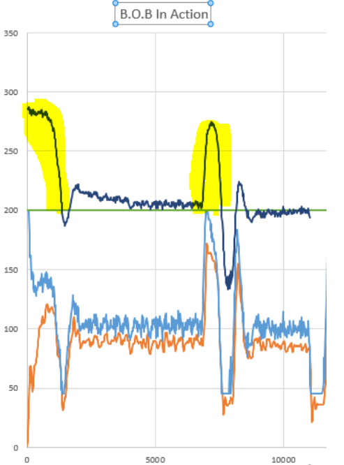
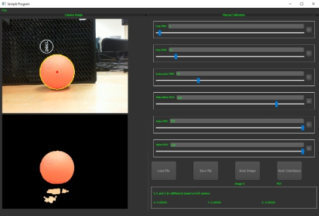
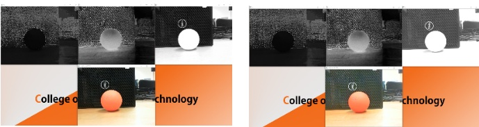
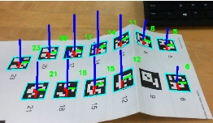
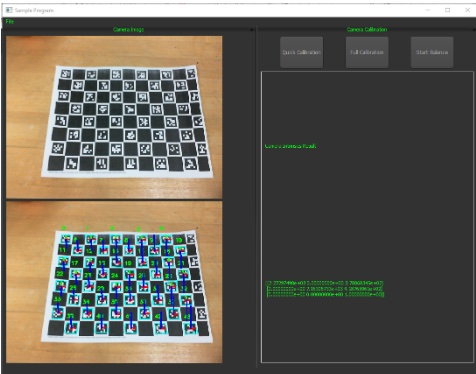

Ball On Beam
This was the original Ball On Beam design that was given for us to use in class
Control Systems:
EEET-427

After taking systems, signals and transforms, I became fascinated by the frequency domain. It was mind
blowing to me that applying a simple set of equations, a signal could be manipulated in a whole new manor
to reveal information that cannot be seen in the time domain. The only course I had left in the curriculum
that related to these topics was digital signal processing. However, I had a free space left in my schedule
senior year, and I decided to fill it with a class that allowed me to explore the frequency domain some
more. A conversation with my signals professor lead me to Control Systems. A class that I could learn more
about using Laplace transforms, and the frequency domain, in order to produce systems that normally seem
like they can’t be controlled.
In order to better understand the topics covered in lecture, the lab assignments involved building a ball
on beam balance system. A seemingly simple task, where a ball is set on a beam, and it must stay in one spot.
A human should then be able to tap the ball out of place, and the system to automatically adjust for the
disturbance. In theory, this seemed simple, but in reality, it was much more complex. First, the design
involved simple DC motors, that when a voltage is applied, spin either forward, or backwards. They aren’t
like servo motors, that given a specific pulse width, they will move to an exact location. Second, as
discovered in the later sections, the process of tuning these systems is iterative and systematic in nature.
That is, it takes time, and is not very fun.
The process began with developing solid control over the motor. Being able to have fine position control
would be a necessity for this project, as any error here will have effects on the system further down the
line. By attaching an encoder to the back of the motor, the current velocity of the motors shaft could be
determined, and taking the derivative, the position of the motors shaft. The initial plan was to have the
control system for motor position to be cascaded. Using the velocity error to control the inner loop, and
the position error to control the outer loop. The idea was to simplify the complexity of the design process
as much as possible, however noise in the system caused too many issues with this design. A simple solution
was to ignore the cascade, and create a basic closed loop system that used positional error, fed into a PID,
to determine the amount of voltage that would be applied to the motor. Modeling the motor itself, as well
as the control loop on MATLAB, variables for proportional, derivative, and integral control were determined.
The results of the motor control loop are shown to the left by using a trapezoidal reference. Doing some basic
physics, it can be shown that a trapezoidal like velocity wave (shown in light blue) can produce a position
that gradually increases to a specific point, and then recedes back to the starting position (shown in
green). By applying the position curve to the motor control system, a judgement can be made on how accurate
the system is. The jagged dark blue lines show the actual motor velocity. Though at times it may be seemingly
to fast or to slow than what it should be, the resulting position (shown in orange) is almost spot on.
Now that the motor can be controlled as if it was a servo, the next step is to determine the position of
the ball, so that the motor knows where to move to. First, the plant for the ball was determined through
basic physics, and fortunately was relatively simple. The next step was the control loop for this. Since
the motor position was fine-tuned, and in theory had a gain of one, a decision was made to cascade this.
By doing so, the block containing the motor plant and controller designed earlier could be ignored in order
to tune whatever components needed for the ball plant. Starting off with the model in MATLAB, and just a PID
controller, several different variations of parameters were attempted, however, all produced either unstable
systems, or ones with a lot of over shoot and oscillation. If there was no over shoot, it tended to be
incredibly slow, taking upwards of 20 seconds to reach steady state. Neither of these options would work
for B.O.B, as it doesn’t look very cool when the ball takes a second to stabilize. Taking the system into
the frequency domain, it was discovered that a lot of these design iterations were close to unstable (hence
the oscillation). It had very few degrees of phase margin when the magnitude crossed 0dB. The quick solution
was to add a lead compensator, to boost the phase in the troubled areas. The resulting created a much more
stable system, with very minimal overshoot.
 After several long days of tuning and modification, a final form was discovered that was responsive, and seemed adequate enough. The program was modified to move the ball to three separate positions on the beam. The ball must start in the center, and hold it steady for a second (within a margin of 10 mm), once held, it will move to the far end of the beam, hold steady for a second, then finally move to the short end of the beam (closest to the distance sensor), hold for a second and repeat. This lead to something very surprising, the system that seemed adequate, was actually marginally stable. That is, once is got to the short end of the beam, the system would start to oscillate, slowly increasing, till it was out of control. We must never forget about Tubby, and as such, the design was modified to accommodate for the instability. To the right, is the plotted response of the system. The first highlighted bump is the step response of the motor start up. That is going from a distance of on the long end of beam to the center. The second highlighted bump is the result of a disturbance on the ball (me tapping it). Both result in the ball centering out within a second, and hitting zero steady state error (within margin) within 2 seconds.
Having expanded my knowledge and intrest in control systems after completing this project, I decided to dive
deeper into the subject. The ball on beam system worked exceptionally, a faster response time than I could've
imagine, with impeccable position/motor control. The fact that it is my senior year, I wanted to create
something that implemented a summary of my knowledge that I have gained attending RIT. Having taken several
classes on microcontrollers, object orientated program, and messing around with computer vision, I decided to
create B.O.B2. The idea was to add a secondary axis to the ball on beam mechanism, and as a result, be able to
control a flat plan. This could then be coded to not only balance the ball in the center, but create simple
algorithms to move the ball in circles, or even implement a drawing pad. So a user could trace out a path on
the plate that the ball must follow.
This was the original Ball On Beam design that was given for us to use in class A side view of the base for B.O.B2. The new redesign allows for both one and two dimensional
balancing with quick and easy changes. For one-dimensional, a user would lock the one side of the foam
core board on the far side of a motor, and bolt the lever arm into the motor arm. For the two-dimensional
balancing, a user would place the would skewer in the center of the base, and attach the board (at the
hinges) to the motor arms. A top down view at just the base of the redesigned balancing system. Here you can clearly see the hole
used to attach the wooden skewer. This allows for a heavier board to be balanced and moved with little to no
force
Just the balance beam alone, this is what the ball rolls across when the system is balancing in a single
dimension. The large black rectangle is the locking foam core section, and the small black square is where
the balance arm bolts onto the motor arm.
A look at the underside of the balancing board. The hinges are what connects the board to the motor arms.
The black square in the center is used as a "fixed" point to prevent the skewer from moving elsewhere on
the board. This ensured only rotational movement of the board can occur
This is the full combination of parts to make the Ball On Board system revert back to it's 1 dimensional
counter part. The simplicity of this design allowed me to work on labs (1 Dimensional) and my personal
project (Two Dimensional) simultaneously. The Ball on Board system in it's full glory. Board attached, and camera mounted up on the side, ready to
go. The only thing missing is the chAruco tags that are printed out onto the balance board.
The first step was redesigning the base. I needed something that I could not only implement the ball on a
plate design, but since the semester labs involved a ball on a beam, it must also be able to accommodate for
that. After a few quick sketch ups, and a trip to the on campus laser printer, B.O.B2 started to come alive.
Ball On Beam
Ball On Board base - Side View

Ball On Board base - Top Down

One Dimensional Balance Beam

Two Dimensional Balance Board
B.O.B2. in 1D mode
B.O.B2. in 2D mode
The next step was determining the ball location on the board. There are several different ways to go about this,
but I decided to approach it using computer vision. I wrote up a script in python with a basic PyQt GUI that
would allow me to test out various color spaces for masking (H,S,V or Y,Cr,Cb specifically as these are light
independent). With this software I can either manually determine the color space mask values, or automatically
determine them for the system. The resulting application would then be able to then determine the center
position of the ball relative to the camera.

I settled on HSV color space, as it seemed to do the best with masking for the orange ball that was given to us.
Additionally, the convince of the hue and saturation being light dependent means that no matter the environment
I am in, the lighting won’t change the needed mask. I added an option to display extra images showing each
individual H, S, and V value of an image, as well as a brightness adjustment slider. It can be seen that as the
brightness changes in the photo, the only channel effected is the value channel in the images color space.

Currently, the balls centroid can be determined relative to a camera, however it needs to be relative to the real
world. To do such, the camera intrinsic values are needed, as well as a marker in the real world to know how the
camera is positioned in world coordinates. Fiducial tags will give the latter, and a deep dive was done into
April tags. However it was discovered there aren’t too many libraries available for python and april tags for
windows (they’re everywhere for linux), so a different fiducial tag is needed. I stumbled upon ArUco tags which
are similar, but computationally much faster. Additionally, they used the open cv library that I already was
accessing in order to do the color masking operations.

When it came time to do camera calibration, a checkerboard pattern was needed, and that’s when I discovered
ChArUco boards. These boards combine the checkerboard pattern needed for camera calibration, along with the ArUco
tags themselves. The resulting is higher precision pose estimation, as well as being able to use the same tags
to calibrate the camera.
Since the GUI was designed using sudo object orientated programing (as python you can’t due true OOP design),
as well as implemented in a MVC structurer, I was able to easily adapt a new view to accommodate for the ChArUco
board detection. The results were phenomenal, fast processing, high precision, as well as being able to occlude
several tags, and still being able to calculate an accurate pose.

Unfortunately, due to time constraints, and several class projects that needed completion, B.O.B2 was not
completed at the time of this report, however plans to finish it off over the summer are in way, and we
should be seeing him come to life sometime towards the end of 2022. The next step is simply tuning the position
control for the secondary motor, and in theory, all that has to be done is split the x and y axis. One motor
gets x, one motor gets y, and they both try to center the ball. It sounds simple, though after trying to
accomplish the ball on beam, I know it will end up being a larger task than it seems, which I am now ready
to accomplish after taking control systems.
The system as a whole was an incredible learning experience. Understanding how very small changes in proportional, derivative, and integral change, could drastically effect the whole system was indeed an annoyance. Even so, it was cool seeing how a few mathematical terms could produce control over something that seems uncontrollable. Additionally, the class brought me together with a few other students that I had never met before until now. It helped drastically when it came time to implement compensators. We all had a different idea, and a different approach, but we all were going through the same pain of the iterative design process. One of us would discover something new about a lead or lag compensator, or even the PID. Within the hour someone else would run into an issue that you could then be able to explain why that was happening based on your own recent discovery. This formulated an incredible learning environment even in the toughest of times.
{kind=link}
{kind=link}
{kind=link}